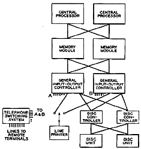
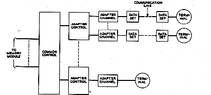
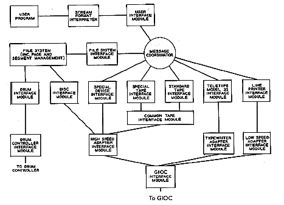

Communications and Input/Output Switching in a Multiplex Computing System
Introduction
This paper discusses the general communications and input/output switching problems in a large-scale multiplexed computing system. A basic goal of such a computing system is to serve simultaneously and continuously a wide range and large number of users. By rapidly time-multiplexing the use of computer system facilities on behalf of these users, the system attempts to satisfy the completion time and response time desires of both the on-line interactive user and the absentee user.
Problems arise in such systems because of the large number and variety of on-line input/output devices, the dynamically changing hardware and software environment, and the need to efficiently use devices such as line printers.
In this paper a new general purpose input/output controller is described which is capable of simultaneously operating a large number of devices of almost arbitrary variety and speed. An input/output software system philosophy is presented which is tailored to the environment of a multiplex computer system. It includes a message coordinator which connects a user program's input and output streams to various input/output devices and to the secondary storage file system. Execution-time redirection and multiple-direction of these connections is a software system feature.
This paper represents the philosophy and direction of the development of the communications and input/ output portions of the Multics system (Multiplexed Information and Computing System).[1-5]
General Problems
The on-line input/output devices in a computer system may be classified as local or remote. The local peripherals such as drums, discs, tapes, line printers, card readers and punches are typically connected to the computer by short, many-conductor cables. The computer system usually has considerable status information available about local devices and has operators to assist in their care and feeding.
By comparison, remote devices such as typewriters, line printers, card readers and punches are typically connected to the computer system via private or switched telephone company transmission facilities. The computer system can directly obtain only some status of the transmission facilities. The remote operator, if any, is likely to be reachable only via his remote terminal. The number of remote terminals will generally be large compared to the number of local peripherals, and will vary dynamically with the number of remote users.
The actual and potential variety of input/output devices is a challenge to a large-scale multiplex computer system. Likely additions to the devices mentioned above are removable discs, some form of inexpensive mass storage such as the data cell, a variety of both local and remote graphical display terminals, a microfilm processor, remote data collectors and various dependent peripheral analog and digital computers. Further, devices like remote typewriters and line printers will typically abound in several models. In some cases the computer itself will need to originate calls to remote terminals.
Certain remote terminals can impose stringent real-time response obligations on a multiplex computer system. Examples are remote process control or experiment control and certain types of discontinuous remote high-speed data collection.
Supervisory program modules which attend to bulk input/output devices such as line printers and card readers must be scheduled for execution frequently enough to guarantee the efficient use of these devices. Because the supervisor is multiprogramming (processing in parallel) the programs of perhaps hundreds of users, the problem of allocating such facilities as tapes and removable discs to these user programs is nontrivial.
Input/Output Hardware System Philosophy
A basic goal of the Multics system is continuous service. The principal method in achieving this goal is to include more than one copy of each hardware module and to configure the connecting paths between modules such that no single module is essential for continued system operation.

Figure 1. Skeletal Hardware Configuration.
Figure 1 is a skeletal system configuration, and shows just enough modules to illustrate this principle. In this example, there are two central processors (CPU), two memory modules, two general input/output controllers (GIOC), two disc controllers, and two disc units. In each case the number two is illustrative and can be higher. Each CPU and GIOC can access every memory module. The disc controller is twin-tailed and accessible by either GIOC; each disc is reachable from either disc controller. Thus there are multiple paths for data flow between disc and main memory.
Single-tailed input/output devices (connectible to only one controller at a time), illustrated by the line printer in Fig. 1, must be manually switched when necessary by the local computer operator.
Remote terminals such as typewriters may access the system via some switching system such as a regular telephone central office or private branch exchange. A number of lines connect each GIOC to the switching system providing multiple-path availability. GIOC ports intended for different types of remote terminals operating at different transmission rates can be assigned different telephone numbers. The switching of remote terminals is discussed below (Connecting and Switching Remote Terminals).
The need to handle simultaneously input/ output devices having a wide range of speeds, and the need to impose automatically priorities dictated not only by this speed range but also by real-time requirements and by the actual relative importance of different terminals, have motivated the design of a generalized input/output controller (GIOC). The GIOC, conceived for the real-time environment, achieves several functions not highly developed in current large-scale computer input/output subsystems.
A tradeoff between hardware complexity and memory usage is available for all speed ranges of terminal devices, whether they be 10 character-per-second teletypewriters or 400,000 character-per-second mass storage peripherals. A modular organization allows functional building blocks to be assembled and tailored specifically for the terminal complement of any rational system.
The input/output capacity of the system is increased over present computer systems by a hardware priority scheme which considers individually the allowable latency of every event requiring the use of main memory. No event requiring the use of main memory is given any higher priority than it requires for error-free operation.
Corresponding to the hardware priority scheme for memory usage is a hierarchy of program interrupt priorities that can ensure rapid response times for real-time events at the expense of slower response times for non-real-time events.
To facilitate real-time responses to terminal devices, channel commands may be executed without program intervention. By placing commands in a list of channel control words, the commands can be conditionally or unconditionally triggered by the data stream.
All input/output operations are under the direct control of an input/output software system, and hardware memory protection for input/output is not required. Uniform programming is facilitated by the implementation of identical formats and procedures for the control of all terminal devices.
Functional Division
The functional division of the GIOC hardware is illustrated in Fig. 2. The modular functional building blocks are the common control, adapter control, and adapter channels.

Figure 2. Functional organization of the input/output controller.
Two general types of adapters are used--direct and indirect. Direct adapters, for which the active control word for data transfer resides in the adapter hardware rather than in main memory, are employed with high-data-rate devices. Data are transferred directly to or from the designated locations in main memory using the control word resident in the adapter hardware. By transferring up to 12 characters in a single main memory cycle, direct adapters efficiently utilize memory cycles at the expense of adapter complexity.
Indirect adapters, which contain minimum control within themselves, are employed with low and medium-data-rate devices. Control words reside in main memory and must be accessed and updated every time a data transfer occurs. Up to 12 characters of data can be transferred in three main memory cycles.
Adapter channels supply the proper termination to lines connecting the terminal devices to the GIOC. Adapter channels may contain data buffering or simply supply the line interface.
The common control section does not contain any data buffering, but serves mainly to order and control all data transfers. For direct adapters, the common control provides the functions of:
- Adapter priority ordering and allocation.
- Communicating program command information.
- Interfacing to the adapters.
- Sequencing and subsystem control.
-
Diagnostics and error control.
In addition to the above, for indirect adapters the common control also provides the functions of:
- Word assembly and disassembly.
- Parity checking and generation.
- Control word updating.
- Dynamic control function detection.
- Temporary adapter status buffering.
For control of data transfers, the mailbox technique is used. Each adapter channel has a dedicated area, or mailbox, in protected main memory for the residence of control words. Data transfer control words are independent for every adapter channel but command, diagnostic, and status control words are shared by all adapter channels.
Each adapter channel mailbox contains two types of control words: Data Control Words (DCWs) and List Pointer Words (LPWs). DCWs control the data transfer between main memory and adapter channels. Each adapter channel has associated with it an LPW which is a pointer for locating the next DCW to be used for data transfer.
Except for command initiation and termination of unit record peripherals, all information necessary to carry out an input/output operation is uniquely contained within the control words of each adapter channel. In this manner, no adapter channel is dependent upon any other adapter channel in the GIOC for control.
Hardware Priority Scheme
A hardware priority scheme minimizes the effects of low-data-rate devices upon the latency of high-data-rate devices by the establishment of priority for all events which require the use of main memory. Six general classes of events exist:
- Status (communication from the hardware to the program).
- Commands (communication from the program to the hardware).
- Direct adapter data services.
- Indirect adapter data services.
- List pointer services.
- Diagnostic functions.
Each class of events itself contains several levels of hardware priority. The priority levels for one class of events can be intermixed with those of another. For example, seven levels of normal status priority are allowed. These seven levels may be intermixed with the priority levels of the other classes.
Commands are treated in the same way as all other events which require the use of main memory. They must wait until the common control grants priority for their issuance.
Two levels of hardware priority for commands are allowed. To issue commands, the program loads one of the two allocated mailboxes with a pointer to the command list. The program then issues an interrupt to the common control. One command is executed each time this event receives priority, until no further commands remain in the command list.
Indirect data service events are those required to transfer data between main memory and indirect adapter channels. Each data transfer takes three main memory cycles.
Direct data service events are those required to transfer data between main memory and direct adapter channels. Each data transfer takes one main memory cycle.
Whenever a DCW exhausts, a list pointer service is required to obtain another DCW and place the new DCW in the proper mailbox. An LPW contains the address of the next DCW to be used in scatter-gather operations.
Instead of accessing the LPW immediately upon a DCW exhaust, the list pointer service event is given a priority just higher than the data service priority for that adapter channel. To initiate the list pointer service, priority must first be granted for that list pointer service event. In this way, the new DCW is guaranteed to be in the proper mailbox before the next data service for that adapter channel occurs. However, the list pointer service time does not add to the latency of higher priority events. This feature allows low-speed terminal devices to operate using sophisticated scatter-gather and control techniques without adding additional latency to higher priority events. All work to be done on the GIOC is partitioned into events in such a way that no single event requires more than four accesses to main memory. With the exception of direct adapter data services, priority is allocated to a new event at the completion of every current event. To further reduce latency for high-transfer-rate terminal devices, any direct adapter data service can temporarily preempt the priority of any lower priority event and thus gain access for the next main memory cycle. Thus, high priority direct adapter data services do not wait for other events using multiple memory cycles (such as indirect adapter data service) to complete their sequence before gaining access to main memory. Each adapter uses one or more levels of hardware priority. All adapter channels within a single adapter are assigned subpriorities among themselves by the adapter control. A complete look at all levels of hardware priority is taken after the completion of every event, and the event which will receive the next memory access is then determined. This priority determination occurs concurrently with other common control functions. In effect, after every event the priorities of all events requiring further memory accesses are reconsidered, and the allocating of the next event to receive a memory access is granted. Except for direct channel data services, which can temporarily preempt the priority of other events, any event which requires the services of main memory is guaranteed to be recognized in its allocated hardware priority sequence within four main-memory access times used by the common control.
Program Interrupt Priorities
Program interrupt priorities can be dynamically assigned by the supervisor on a per-channel basis. Program interrupts result from status being stored in main memory after an event occurs which requires program action. In addition to the seven priority levels for memory access provided by the hardware, status has seven levels of program interrupt priority. For any given event, when a level of hardware status priority is changed by the software, its corresponding level of program interrupt priority is also automatically changed, guaranteeing the associated change in real-time response for that event.
Four subclasses of status events exist:
- Exhaust
- Terminate
- External signal
- Internal signal
Exhaust status indicates the current active control word for an adapter channel cannot be used for further control. This event implies that a new control word must be obtained to continue data transfer.
Terminate status indicates that the current active control word for an adapter channel cannot be used for further control and that, in addition, no further data transfer for that adapter channel is allowed.
The external signal status is the vehicle by which events outside the GIOC can gain recognition by the program. Such events as operator actions on peripherals fall into this subclass.
The internal signal status is the vehicle by which special control events within the GIOC can gain recognition by the program. Such events as the dynamic detection of incoming communication control characters fall into this subclass.
Each adapter channel, through its control words, can independently activate any one of the status levels when one of the four subclasses of status events occurs. For any given adapter channel, the status levels associated with the subclasses of events may be the same or different. At any given time, each adapter channel thus has access to four levels of status response corresponding to the four subclasses of status events.
Under program control, the same status event occurring on different adapter channels can be assigned different levels of hardware priority and correspondingly different levels of program interrupt priority. This allows optimization of the real-time effect of any event upon any other queued events.
Channel Commands
Channel commands can be accepted by an adapter channel at any time, but not all allowable commands have rational meaning when executed without program intervention. Command execution without program intervention can occur only as a result of a data transfer.Commands such as "change from transmit to receive mode" can be preplanned in the data sequence and executed without the need for program cognizance at the time of execution. Other commands, such as "change from the inactive to active mode" only have meaning when initiated by the program.
INPUT/OUTPUT SOFTWARE PHILOSOPHY
The input/output software philosophy must simplify wherever possible the design of a large-scale multiplex computer system and must adequately cope with the general communication and input/output problems discussed earlier.

Figure 3. Block diagram of input/output software system.
Modularity
In order to accommodate a dynamically changing device environment and to permit the introduction of new input/output devices without major effort, the input/output software should be highly modular. The device-dependent software for each device should be isolated in a separate, replaceable module. Figure 3 shows a general overall block diagram of the input/output software and its relationship to other software. The message coordinator (MC) and other blocks are discussed below. The MC essentially switches a user's input/output streams to various device interface modules (DIM). A standard DIM will exist for each type of device; for example, there will be a DIM to operate all currently attached Teletype Model 35 typewriters using a standard strategy. This DIM as well as others must be replaceable during system operation. In addition, it must be possible to add a second DIM to operate one or more Model 35's with some special strategy, and to easily associate it with the proper user's streams and the proper communication lines (i.e., the proper Model 35's). This indicates the necessity for a well-defined, standard software interface for DIMs. The same standard interface must apply to the user interface modules (UIM) and the file system interface module (FSIM).
Because the GIOC is a device, all software which knows about standard GIOC behavior is isolated in the controller interface module (CIM) for the GIOC (the GIOC CIM is hereafter called the GIM). Inasmuch as the GIOC can accommodate various adapter control modules, any special behavior inherent in one kind of adapter control should also be isolated. The typewriter adapter control and adapter channels, for example, may have an echoplex feature (retransmit what is being received), which has no connection with the basic GIOC philosophy or with any particular typewriter. Thus a need exists for adapter interface modules (AIM).
Flexible Input/Output Direction
It should not be necessary for a user to decide at the time he writes a program what actual sources and destinations are to be associated with his program input/output streams. The term "stream" is used here to include all input/output transactions, whether they be sequential access or random access in nature. For example, the "title" of a "file" in a PL/I program is the "stream" name to the input/output system.
Prior to execution, a declaration to the UIM establishes a stream-device connection. The absence of such a declaration implies a default connection; a program invoked from a remote typewriter would have that typewriter connected to all input/output streams in the default case. It must be possible to alter this connection during execution by a call to the UIM. Further, it must be possible to multiple connect streams and devices. During debugging, a particular program might direct both bulk-production printout and commentary printout to a remote typewriter. Later the bulk printed output might be directed to a computation center high-speed line printer or a file in the secondary storage file system. At another time, some printout may need to be directed simultaneously to two line printers in two different locations and to a tape file.
It should be understood that the "user program" may be some supervisory system module. Printer destined streams are normally diverted to a file in the file system for later scheduled printing, unless the user really meant to attach a printer to his program. Such diversion is also useful for output on tape, removable disc, etc., to facilitate allocation of such devices.
Description
A user program initiates input/output by calling a standard or special UIM. The call arguments include the stream name. The redirection and multiple-direction of streams and devices require a module which acts as a switchboard; the message coordinator (MC) in Fig. 3 has this purpose. The UIM uses the MC to implement the stream-device connections for a call. If a stream is associated with a file in the File System (FS), a connection is made to the FSIM.
The File System contains (or knows how to retrieve) all retained files; it is described in detail in a companion paper.[4] Files in the File System are essentially formatless. The FSIM can impose a standard file format. The FSIM makes only declarative calls to the File System; it accomplishes the input/output of files implicitly by means of segment addressing.[3-4]
Figure 3 shows a few representative DIMs. The DIMs basically invoke the strategy for handling particular devices. For example, they may convert between the system's standard character set and the device's particular character set. This conversion includes handling of escape conventions necessary to represent characters absent on the device. The Model 35 DIM knows what messages are needed to operate various terminal features. Two standard tape DlMs are shown, because of the need for two distinct tape strategies. One tape DIM handles tapes in standard system format. The second tape DIM permits handling of nonstandard tape formats in a standard way. Both of these tape DIMs call a subsidiary tape DIM which handles common tape problems.
A single level of format interpretation is available from the DIMs and the FSIM. File System files and device data can be interpreted as being formatless or as having arbitrarily long logical records. In the latter case the files and data must contain format information. Any additional format interpretation such as that required by PL/ I can be done by the user or by some standard stream format interpreter (see Fig. 3).
Certain DIMs, such as the disk DIM used exclusively by the File System, do not use the Message Coordinator. Some may not funnel through the GIM; this is illustrated by the drum DIM and separate drum controller CIM in Fig. 3. The File System may also directly call certain DIMs that are normally reached via the message coordinator. For example, disc packs can be used for extending the File System storage.
An input/output software interface language which is independent of the computer, of the input/output controllers, and of the input/output devices themselves should be used for communicating between software modules. The ease of adding, substituting, and replacing modules implies the need for every module to check the validity of each call to it. For example, the GIM must determine whether a request for service from a DIM or AIM is valid--perhaps whether or not the requester has the right to initiate activity on the referenced channel. The interface language must facilitate this validity checking. All address references in the language are relative. An inner module in the GIM will translate to absolute addresses when actual DCWs are formed.
Interrupt Handling. All basic trap or interrupt handling is begun in a supervisor module outside the input/output system.[3] This module determines which module of which process is to be informed about the interrupt. Interrupts originating from the GIOC, for example, are passed for handling to the GIM which knows how to disentangle the associated status information from the GIOC. In turn the GIM passes back to the Tape DIM interrupt and status information relevant to tape handling. Certain interrupts might ultimately be reflected back to a user process.
Random and sequential input/output calls are permitted to be mixed and used for all of a user's input/output streams. Sequential calls include calls for the next record, message, character, etc., and calls for spacing and backspacing. A call for "record fourteen" is a random call. All DIMs and the FSIM shall take some action for every type of call. A call to backspace the card reader may result in an error return or no-operation depending on circumstances. Backspacing a typewriter with reverse line feed might be valid. Random calls to a tape file are permitted, because of the inclusion of logical record numbers within the logical record on the tape file.
There is no intended direct correlation between the type of call and efficient device utilization. The user of files in the file system will not usually know on what physical device the file exists. Even if the user did, the file may be scattered on the device in an unknown way. The multiplex character of the monitor system will overlap rewinds, seeks, etc.
Synchronous and asynchronous input/output are the two basic operating modes for any particular in put/output stream. In the asynchronous mode, the physical input/output transactions are not necessarily synchronized or interlocked with the execution of a program's input/output statements. For example, a user at a typewriter would be allowed to type messages into the system prior to the execution of the read statement which would use them; every execution of a read statement merely plucks the next waiting message out of an input buffer. This example of asynchronous input is analogous to buffered read-ahead schemes which have been used with discs, tapes, etc. An example of asynchronous output is the collecting of output in a core buffer until some physical record size is reached. In the synchronous mode, the physical transaction associated with a program's input/output statement is carried out during the statement's execution; i.e., control is not returned to the program until the actual transaction is completed. For example, a typewriter user would not be allowed to type (the keyboard might be locked) until the read statement was encountered. For a particular stream, the input and output modes are independent; for example, the input might be interlocked and the output not. The modes are declarable both prior to and during execution by calls to the UIM. Appropriate interpretation of these modes appears possible for multiple-connected streams and devices. Establishment of a mode amounts to determining which system module in the chain initiates the return to the user program. Under most circumstances asynchronous in put/output is the most efficient. The synchronous or interlocked input/output is useful when operator or user attention is required, and most important when a user is interacting with an undebugged, strange, or many-branched program. The synchronous mode should be imposed on a remote terminal whenever a stream is not associated with the terminal, i.e., when there is no program to which to give messages.
Statistics. Sufficient statistical collecting ability must be included in the input/output software design to accommodate almost any conceivable charging and facilities-allocation schemes. Modes of operation for taking extensive data relevant to system performance should be possible.
Remote Terminal Characteristics
Remote terminals may be classified as independent or controlled, insofar as the computer system is concerned. A remote small computer which interrupts occasionally for a fast calculation is largely independent. A typical remote typewriter. is completely controlled when connected to the system. The following discussion pertains to controlled terminals generally and is illustrated by reference to remote typewriters. The discussion is not intended to provide a list of all of the desirable remote typewriter characteristics.
Status
It is important that the system always have as complete a knowledge of terminal status as possible. Therefore, all pertinent terminal functions must be accompanied by transmission to the system of appropriate information. For example, line feed, carriage return, ribbon color shift, etc., on a typewriter all must transmit characters to the system. Of course, these same functions must be performable by the system by transmission of suitable codes to the terminal. The Proposed Revised ASCII character set provides 32 control characters.
Terminal Lock
To implement the synchronous input mode, the terminal must be lockable by the system. When a read statement is executed, the typewriter keyboard can be unlocked by the system. Even in the asynchronous input mode the keyboard should not be unlocked until the input/output software and hardware are ready to buffer a message. The inability to lock a terminal is an invitation to unexpected and/or unwanted input. The terminal is typically locked during computer output. Of course, a printed, audible, or preferably visual proceed indication is needed to alert the user that input is possible.
An alternative to a terminal lock on terminals producing their own local copy of the input is to operate them full-duplex and to have the computer system echo or retransmit the input back for display. The lack of local copy becomes an indication that input is not wanted. This scheme is workable provided the proceed indication is available. Long transmission delays due to long distances or due to intervening store-and-forward systems would however render this approach awkward or unusable.
The error-detecting possibilities of the echoback scheme suggest its use even when terminal lock is used. Provision to switch to half-duplex in cases of excessive echo delay is then necessary.
Interrupt
An absolutely essential feature of remote terminal operation is the "interrupt" ability. There must be a key or button whose depression causes instant detachment of the terminal from the current program stream. This interrupt must work even when the terminal is locked. The resulting status of the previously attached program is not discussed here. Normally the terminal is attached to some supervisor command module and is readied for command level input.
Reasons for needing interrupt ability include: (1) the need to stop the attached program which may for example be looping or producing meaningless printout; (2) the desire to attach the typewriter to another stream, possibly belonging to some other program.
Implementation of this interrupt feature requires either full-duplex operation of both terminal and computer, or half-duplex operation with some sort of an auxiliary, possibly narrowband independent channel. The latter is effectively provided by the teletype line-break technique of putting a "space" on the line whose duration is long enough for unique interpretation. The terminal lock must not lock the interrupt button.
Identification
All terminals must be able to identify themselves uniquely to the system. The teletype automatic answer-back scheme is a good example of this ability, because the answer-back message can be long enough not only to provide unique identification but also to independently indicate possible special terminal features.Although user identification rather than terminal identification should normally be used to control access to the computer and to files in the File System,4 positive terminal identification permits default user identification and can indicate that the terminal is in fact a type known to the system.
Connecting and Switching Remote Terminals
As suggested in Fig. 1, remote terminals can access a computer system via a telephone central office or private branch exchange (PBX). The basic reasons why such automatic switching is advisable in a large-scale multiplex computer system involve its general flexibility and lower cost. This is especially true if continuous system availability is important. The removal from service for repair or preventative maintenance of one of a system's GIOCs, for instance, requires expensive duplication of computer ports to guarantee access to private lines.
Complete automatic switching provides:
- User-controlled access to more than one computer. The Bell Telephone Laboratories, for instance, will have four geographically separated, large multiplex computer systems by 1967.
- User-controlled or switching-system-controlled avoidance of unusable computer ports.
- Static and dynamic load sharing of remote users with multiple computers.
- Greater flexibility in planning.
- Concentration of low-usage terminals.
- Automatic Direct Distance Dialing access and possible use of existing tie lines between PBXs.
- Easier terminal maintenance, because of the availability of test centers via the switched network.
- Terminal-to-terminal communication.
- Ability to speedily assign, connect, move, reassign, etc., terminals.
An interesting problem can arise while switching remote computer terminals through a telephone switching system. Existing telephone switching plant is engineered to handle the traffic of talkers. A crucial parameter of talker traffic statistics is the product of the average circuit holding time and the average calling rate during the "busy" hour; this quantity is typically in the range of 3-6 call minutes. Thus an adequate number of talking paths through the switching system may be from 5-10 percent of the number of subscribers. A study made of the holding times of Project MAC users revealed an average holding time of about 1 hour; 20 percent held less than 5 minutes, 50 percent less than 30 minutes, and 80 percent less than 100 minutes.
It may therefore be difficult to add any sizable number of remote typewriters to an existing switching system without impairing telephone service, unless the terminals are to be used for only short holding time inquiries. It is possible to modify existing switching facilities or engineer new facilities at reasonable cost. This, however, can be time-consuming, and planners of remote computing systems should alert telephone companies as soon as possible.
Transmission Status
Each communication-oriented adapter channel on the GIOC can, in addition to receiving and transmitting data, sense a number of local external conditions. These sense lines will be used typically to read status information from standard telephone data sets. The system can then be fully aware of when the ringing signal is present, when data set carrier is present, when data can be sent, etc. These adapter channels also provide control outputs which can operate data set functions, such as causing a hangup.
Conclusion
The communication and input/output problems inherent in a large-scale multiplex computer system have been discussed. Hardware and software philosophies and a description of a general input/output controller intended to cope with these problems have been presented.
It is felt that the modular and dynamic structure of the input/output software and its flexible stream switching ability are essential to the success of a multiplex computer system. Similarly, the hardware flexibility and the uniform software approach permitted by the new controller greatly simplify the design of such computer systems.
Acknowledgment
The material presented here includes the thoughts and efforts of many colleagues.
References
- F. J. Corbató and V. A. Vyssotsky, "Introduction and Overview of the Multics System," FJCC, 1965.
- E. L. Glaser, J. F. Couleur and G. A. Oliver, "System Design of a Computer for Time-Sharing Applications," FJCC, 1965.
- V. A. Vyssotsky, F. J. Corbató and R. M. Graham, "Structure of the Multics Supervisor," FJCC, 1965.
- R. C. Daley and P. G. Neumann, "A General Purpose File System for Secondary Storage," FJCC, 1965.
- E. E. David, Jr., and R. M. Fano, "Some Thoughts About the Social Implications of Accessible Computing," FJCC, 1965.
* Work reported herein was supported (in part) by Project MAC, an M.I.T. research program sponsored by the Advanced Research Projects Agency, Department of Defense, under Office of Naval Research Contract Number NONR-4102(01).
1965 Fall Joint Computer Conference